In the previous section, we created the individual parts of a table. Each part was created floating in space, without reference to the other parts of the table. Now we will begin to arrange the individual parts into their proper places with respect to each other. The goal of building the assembly of parts is two-fold: to see what the piece looks like when complete and to prepare to create the joints which will ultimately hold the parts together.
The first assembly we will create will be the table top. The top consists of a field and two breadboard edges. In order to create an assembly, the parts which will comprise it must have already been created and included in the model which we are working on. So, open the model which you created in the previous section; it should contain a 15 ½” x 16” Top field part and a 2” x 6” Breadboard edge part.
Create a new assembly by selecting the Insert|Assembly menu option (or by selecting Assembly from the tab bar context menu or by clicking on the toolbar). lignumCAD will display the Create New Assembly dialog.
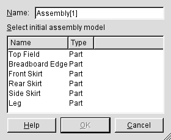
From this dialog, you must select a part to start the assembly with. Click on the part named Top field. Also, navigate to the name type-in and enter Top. Click OK (or press Enter or type Alt+O) to accept the choices and create the assembly.
Next, we want to add a breadboard edge to the Top assembly. Select the Tools|Add Model menu option. A dialog window similar to the Create New Assembly dialog will appear. Select the Breadboard edge part and click OK. Turn on solid mode (press the right mouse button and select Solid from the context menu) and rotate the view around (press the left mouse button and drag it up and down). You should see that both the field and the breadboard edge are now both shown in the display. You should see something like this.
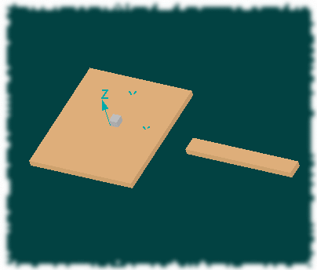
Now, we need to define the relationship between the field and the breadboard edge. This is the purpose of the Constraint Definition window which appears when a part is added to an assembly.
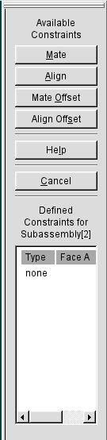
To understand how assembly constraints work is somewhat complicated, but it quickly becomes intuitive, perhaps even fun. Consider what you do when you physically assemble a top with a breadboard edge: you usually cut a long tongue on the edge of the field and a corresponding slot on the breadboard edge; the tongue is slightly smaller than the slot. When you slip the breadboard onto the tongue, the side of the breadboard with the slot will be flush against the base of the tongue. However, there will be a certain amount of play in the breadboard; you will still be able to move it a little bit forward and backwards along the tongue and a little bit up and down. Ultimately, when you drill the holes for the pins, you want to make sure that the top of the field and the top of the breadboard align and that the front of the field and the front of the breadboard align. The three faces of the breadboard which you try to line up with the field constitute the three constraints which you will create in lignumCAD.
The constraint definition window has four constraints which you can apply: Mate, Align, Mate Offset and Align Offset. To summarize the basic actions: mate means that two surfaces are stuck together facing each other, align means two surfaces line up facing the same direction. The two offset constraints allow for the two surfaces to be separated by a given distance but otherwise obeying the same constraints on orientation. Before explaining the constraints more explicitly, let's complete placement of the first breadboard edge.
As suggested by our mechanical procedure, we will first place the breadboard edge against the field. Click Mate (or type Alt+M) and the cursor becomes the face selection cursor (). In the main window, you will see that only faces of the breadboard will be highlighted as you move the mouse over the parts. Also, observe that only faces which actually face the front of the screen are highlighted (in other words, if you want to select a hidden face, you will have to rotate the view point). You want to click on one of the long, narrow faces of the breadboard edge, as show in the figure.
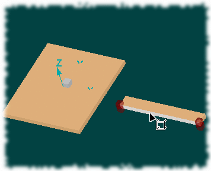
(You might notice that there are actually two such faces on the breadboard. Which should you pick? Since the breadboard is symmetric, it really doesn't matter. Later when we work with more complicated parts, though, there will be less choice.)
After picking the edge of the breadboard, the cursor will change to the additional face selection cursor (). In the main window, now, you will only be able to select faces from the field. Highlight one of the end grain edges of the field. (These are the longer, 16” edges. It might help to switch to Texture mode, since you will be able to see the direction of the grain.)
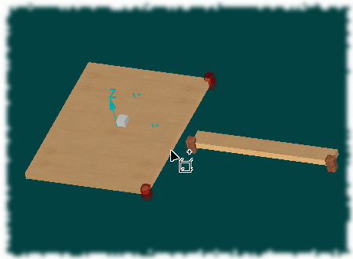
lignumCAD will now calculate a new position for the breadboard such that the two selected faces are mated. Your assembly should look like the figure below.
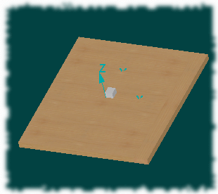
In the figure, it looks like the breadboard edge is now properly placed. It appears that the top of the breadboard and the top of the field align, as do the front of both parts. However, as far as the computer is concerned, the breadboard has not been completely constrained. This is indicated by program with the Constraint Definition window: as long as this window is still present, the part is not completely constrained. As with our real breadboard, it is still possible to move the breadboard back and forth, and up and down.
To complete placement of the breadboard, select Align and select the top surface of the breadboard and the top surface of the field.
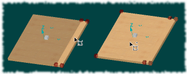
Select Align again and select the front surface of the breadboard and the front surface of the field. lignumCAD will now hide the constraint definition window, indicating that the breadboard has been fully constrained.
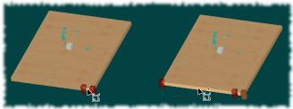
Finish the Top by adding another breadboard edge to the other side of the field. When complete, your Top should look like this.
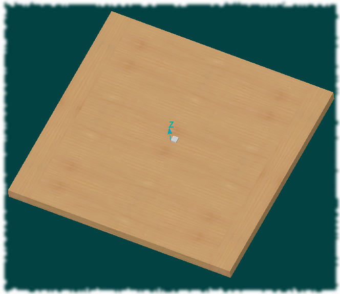
The following section describes the assembly constraint process in a little more technical detail. You can skip ahead to the Table Base section if you're not interested.
This section attempts to describe some of the details of assembly constraints without too much in the way of mathematics. You should be able to use the program without completely understanding this material, but when things get complicated, it is always useful to understand exactly what is going on. The full mathematics of assembly constraints are described in the Technical Reference [TBD].
First off, recall the two-dimensional XY coordinate system from algebra. A coordinate system describes a way in which to locate positions on a two-dimensional plane. The coordinate system consists of two number lines at right angles to each other. Any point can be defined by a pair of numbers, each of which denotes a position along one of the number lines.
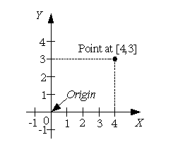
The proper name for a number line in a coordinate system is axis. The horizontal number line is usually called the X axis and the vertical line is usually called the Y axis. The point where the two axes meet is usually assumed to be the position corresponding to zero distance along each line; it is called the origin of the coordinate system. Such a coordinate system is usually called a Cartesian coordinate system in honor of René Decartes (1596-1650). (To reiterate: The attributes which make this a Cartesian coordinate system are: 1) the surface on which the coordinate system is placed is a flat plane, 2) the axes are straight lines, 3) positions along the axes are uniformly spaced, and 4) the axes intersect at 90º. Many other arrangements of surface, axis curve, position spacing and intersection angle are possible; these alternate arrangements yield non-Cartesian coordinate systems.)
It is especially fitting to mention this here, since Decartes' contribution to mathematics was to show how the theorems of geometry could be translated into algebraic equivalents. Geometry deals with abstract figures, such as points and lines. Although we have an intuitive understanding about how such objects relate to the real world, geometry itself does not provide an explicit meaning for them1. Descartes showed how such abstract entities can be described by sets of numbers and algebraic equations; which in turn allows them to be manipulated by a computer. Thus, lignumCAD, itself, is an expression of geometry through algebra.
The next step to understanding the constraint system of lignumCAD is to look at coordinate system transformation. Suppose that, instead of a simple point being specified in a coordinate system, you were specifying the origin of another coordinate system. Consider this figure.
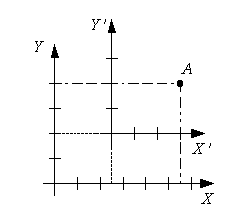
We now have two coordinate systems, conventionally called the XY and X'Y' (pronounced “X-prime, Y-prime”) coordinate systems. For concreteness, let the origin of the X'Y' coordinate system be at the point [2 ½ ,2] in the XY coordinate system. Suppose that you had a point, A, in the X'Y' coordinate system at [3,2]. The question to ask is: What is the position of A in the XY coordinate system? It's simple enough to take a ruler and measure the distance of A from the origin of the XY coordinate system. It would turn out to be [5 ½ ,4]. It should also be clear that any point in the X'Y' coordinate system can be converted to a point in the XY coordinate system simply by adding the position of the X'Y' origin to it. Similarly, to convert a point in the XY coordinate system to one in the X'Y' coordinate system, you would simply subtract the position of the X'Y' origin.
Similarly to points, it is also possible to consider that figures can be drawn with respect to a coordinate system. Here is a figure of a rectangle which is drawn with respect to a coordinate system displaced from the origin by [3,2].
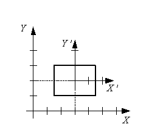
How is this germane to lignumCAD? Each part that you create in lignumCAD has a coordinate system. In fact, each part has its own, personal (the technical term is local) coordinate system. You can imagine that each part is stuck to its local coordinate system; where ever the coordinate system goes, the part must go to.
When you create an assembly, you somehow have to merge the local coordinate systems of each part together. Here is a simple figure which illustrates the process.
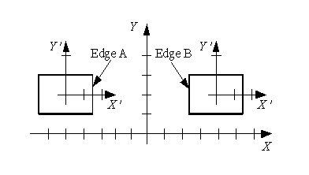
Each of the two rectangles in the figure have a local coordinate system. The origin of the left rectangle's local coordinate system is at [-5,2]; the origin of the right rectangle is at [4,2]. When we choose to mate two parts together in an assembly, this essentially means that we want to know where to move the origin of the right rectangle (for example) such that the right edge of the left rectangle (labeled A in the figure) coincides with the left edge of the right rectangle (labeled B). For our example, algebra tells us that the edge A is 4 units to the left from edge B. Therefore, if we move the origin of the right rectangle's coordinate system 4 units to the left, then the two edges will coincide. The operation of moving the origin of a coordinate system is called translation.
There is another aspect of assembly constraints to understand from our example mate operation: the translation of the right rectangle's origin only moved it the direction of the X axis. It did not determine if there should have been a translation in the Y axis direction. The reason for this is the nature of the entity which determined the translation: the line segments A and B. The edges of the rectangles are composed of line segments; where lines are one-dimensional objects which continue without a definite beginning or end, line segments are generally a finite section of a line with definite boundary points. It is straight forward to compute the distance between two lines (as long as they are parallel, of course) and translate them so that they coincide. However, how do you line up the ends of the line segments? A single constraint is not sufficient to completely determine the relationship between line segments. Thus, you would need an additional constraint to, for example, align both top edges of the rectangles: This would give you a translation in the Y direction and complete the constraint.
In addition to translation, another form of coordinate system transformation is rotation. The figure shows a coordinate system, X'Y' , which is rotated about its own origin (which is, itself, translated from the origin of the XY coordinate system). Again, it is possible to write an equation which converts a point in the X'Y' coordinate system into a corresponding point in the XY coordinate system. The equations involved are more complicated than in the case of translation, but ultimately, there is a straight-forward way to represent both operations.
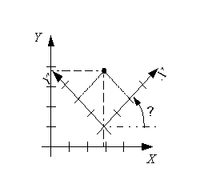
How do rotations arise in lignumCAD? The figure below shows the initial step of an assembly of a table skirt and a table leg. As you can see, the orientation of the table leg is not initially correct. If the first operation is to mate the right side of the skirt to the flat on the side of the table leg, then the coordinate system of the table leg will need to be rotated 90º before the appropriate faces can be translated to coincide.
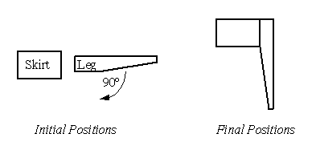
lignumCAD, of course, works in three dimensions. A three-dimensional coordinate system is shown in the figure below. There are three axes, X, Y and Z, and each makes a right angle with the other two. In addition, the Z axis obeys the “Right Hand Rule” (i.e., if you point the figures of your right hand along the X axis and curl them in toward the Y axis, your thumb will point in the Z axis direction). Such a coordinate system is usually called a right-handed coordinate system.
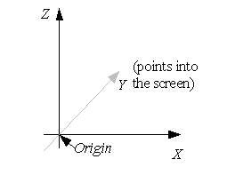
The same arguments which apply to transforming line segments to coincide also apply to faces of solids in three dimensions. In particular, the bounded planes which make up the most common faces behave almost identically to line segments. However, since plane faces are two-dimensional instead of one-dimensional, a third constraint is needed to fully specify the location of assembled part. Let's consider an example and pick up some more jargon along the way: Suppose that you have two square blocks, one which has 2” edges and another which has 1” edges. The goal is to completely constrain the 1” block with respect to the 2” block.
The first question to answer is: How am I allowed to move the 1” block, or, more precisely, how am I allowed to move the coordinate system of the 1” block? This question is difficult to answer precisely without mathematics, but we'll give it a try. The first concept to tackle goes by the name of linear independence. In this context, linear independence means that there is only one way to move an object in a given direction. For example, if you want to move an object along the X axis of the global coordinate system, this can only be accomplished by translating its local coordinate system along the X axis. It could not be accomplished by translating its coordinate system just along the Y axis or just along the Z axis or any combination of translations along the Y and Z axis. In other words, translations in the X direction are independent of translations in the Y and Z directions. The same thing holds true for translations along either the Y or Z axes as well.
Suppose you want to translate the block 1 ½” along a 45º line between the X and Y axes? Such a translation would consist of a combination of translations along both axes. A subtle consequence of linear independence, however, insures that this combination is unique. That is, there is only one possible combination of translations which can move the coordinate system to the desired position.
Some more jargon: The fact that, in three-dimensional geometry, there are three linearly independent directions means that the system has three degrees of freedom. But, there is more to it. Just like the rotation operation in two dimensions, you can rotate a coordinate system in three dimensions as well. In three dimensions, however, there are three “directions” in which a coordinate system may be rotated. In the figure below, a second three-dimensional coordinate system is shown. The best way to think of rotating a three-dimensional coordinate system is to imagine the Z axis piercing a sphere centered around the origin of the transformed coordinate system.
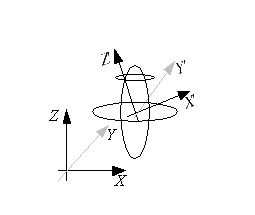
Just like the coordinates of latitude and longitude are used to locate a point on the surface of the Earth, you need two coordinates to define the direction of the Z axis. Additionally, you can now imagine another rotation of the system shown above: that of twisting the X'Y' axes around the Z' axis (which is exactly equivalent to the rotation of the two-dimensional coordinate system). Therefore, in addition to the three degrees of translational freedom, a three-dimensional coordinate system also has three degrees of rotational freedom.
So, getting back to the block example, pick a face on the 1” block and a face on the 2” block and place them touching each other. This is equivalent to the mate constraint in lignumCAD. Now, how can you move the 1” block so that the two faces remain touching? You can move the 1” block up and down, and forwards and backwards; you can also twist the block around. Therefore, the mate operation has specified three of our six degrees of freedom, namely one translational direction and two of the rotational directions.
The next constraint to apply is to say that the front faces of both blocks will be flush with one another. So, twist the 1” block around until its front face is pointing in the same direction as the 2” block's front face and slide it so that the two faces line up. Now, how can you move the 1” block so that it still meets both of the constraints we've created? Its left face must remain in contact with the right face of the 2” block and its front face must remain aligned with the front face of the 2” block. The only remaining degree of freedom for the 1” block is to slide up and down; the align constraint has specified one more translational and the remaining rotational degree of freedom.
The last constraint is aligning the top of the 1” block with the top of the 2” block. This consumes the last degree of translational freedom and thus fully constrains the position of the 1” block.
You might ask why the mate and align operations are chosen as they are. You can imagine different methods of evolving constraints, some probably easier than this scheme. The answer is that this system is wholly arbitrary. If you want to suggest improvements, we're always willing to listen.
Constructing the table base is essentially the same as assembling the top. It is somewhat more complicated because there are more parts and the parts themselves are slightly more complicated. Start by creating a new assembly named Base using the Front Skirt part. Now you want to add a Leg part to the assembly. The constraint dialog will activate and you should see something like this.
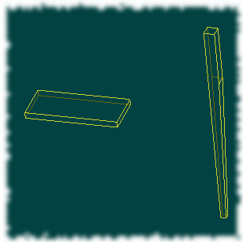
Note that the leg is tapered on two sides. This is an aesthetic consideration and you could certainly make a leg however you'd like. As of version 0.2 of lignumCAD, though, you're stuck with this kind of leg. In addition to the two sided taper, it is conventional to put the tapered edge on the inside of the piece. Notice, then, that there are two faces of the leg which form small rectangles at the top of the leg. In order to make the table base, you will need to mate these faces to the edges of the skirts. Assuming that we're starting with the right, front leg of the table, select the Mate operation and pick the face of the leg shown below.
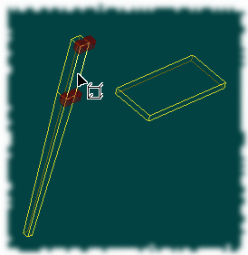
Note that I have spun the window around to the back side so that the two leg flats are facing out from the screen. In this orientation, you want to select the flat on the right side of the leg. Next, pick the closer edge of the skirt.
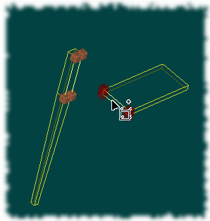
After you select the skirt edge, lignumCAD will apply the constraint and compute the new position of the leg. It will actually look kind of strange,
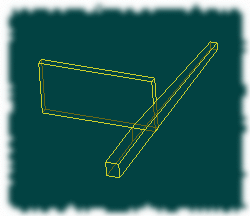,
but remember, we still have a rotational degree of freedom left. The next step, then, is to align the top of the leg with the stop of the skirt.
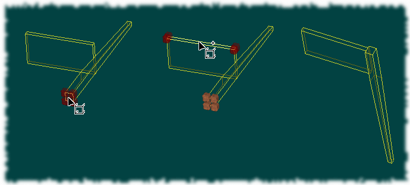
The final touch is to align the front of the leg with the front of the skirt. Again, an aesthetic consideration is that the leg should not be flush with the skirt; rather, it should be slightly proud of the skirt in order to make a more interesting shadow line. To accomplish this, we will make an Align Offset constraint of the part fronts. So select Align Offset and select the faces shown below.
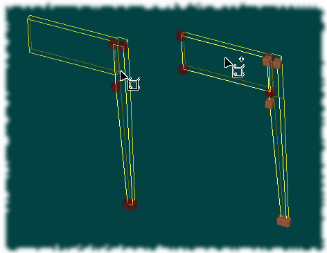
After you select the front face of the skirt, the offset dialog will be shown. Enter a value of 1/8”.
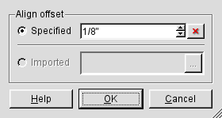
The leg is now completely constrained and the constraint dialog should hide itself. If you click on the leg, it will be activated and you will see a dimension for the align offset. If you want to change the offset, you can double click on the dimension and the offset dialog will be displayed.
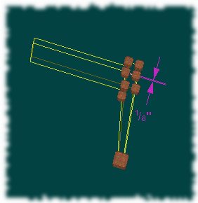
The next step is up to you. You can either add a leg to the other side of the front skirt or add the side skirt to the right front leg. The procedure is the same as before: add the part, mate the part to the assembly, align the top with the assembly and add an align offset to set the skirt back. When complete, your table base should look like the figure below.
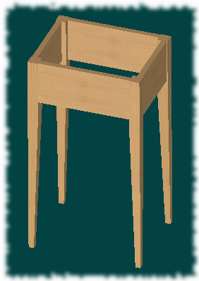
When you add a skirt to the assembly, you will mate it to a leg, align it to the top of the leg and the align offset the skirt from the leg. Because the skirt is recessed relative to the leg, when the offset dialog appears, enter -1/8”.
Besides gluing parts together in an assembly, you can also assemble Assemblies. So, to complete the table we are going to put together the top and base. Create a new assembly named Table and start it with the Table Base assembly. Then add the Top assembly. Your table assembly should look like the figure below.
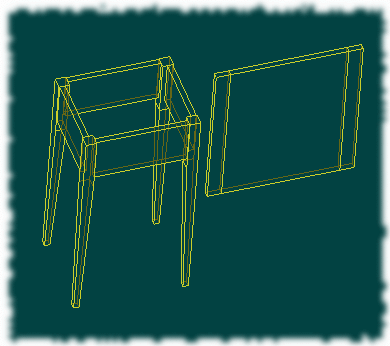
Mate the bottom of the top to one of the top surfaces of the base. Note that there is a lot of ambiguity in these directions. For example, the bottom of the top could refer to any of six faces in the top assembly: the top or bottom of the field or the top or bottom of either of the two breadboard edges. Since they are all in the same plane, the top will be in the same final position regardless of the selection. However, you want to think about what it means to mate the top to the base, which will generally mean the bottom of the field will rest on the base. Similarly, the top of the base could be represented by any of the either top faces in the base assembly: the tops of the four legs or the tops of the four skirts. The choice is less clear here; the top of the front skirt is probably the best choice.
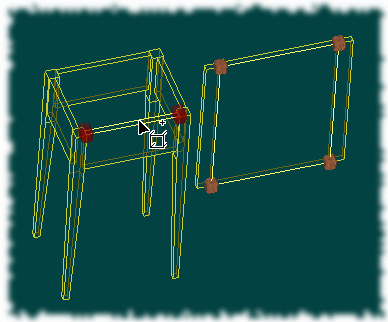
Now we need to center the top on the base. The correct way to do this would be to use the centerline we created on our original sketch of the table. However, the version 0.2 of lignumCAD does not yet allow propagation of dimensions between pages, so we have to compute the correct values ourselves. Recall that the top section of the legs are 1 ½” thick and the side skirts are 9 ½” long. Therefore, the depth of the base between the from and rear legs is 2 * 1.5” + 9.5” = 12.5”. Also, the front and rear skirts are set back by 1/8” from the face of each leg, so the distance between the outer faces of the front and rear skirts is 12.5” -2 * 1/8” = 12 ¼”. The top is 16” deep, to the front edge of the top must be offset by (16” -12 ¼”) / 2 =1 7/8”. Create an align offset constraint and select the front edge of the top assembly and the front face of the front skirt. The figure below shows one possible set of choices. Enter 1 7/8” in the offset dialog.
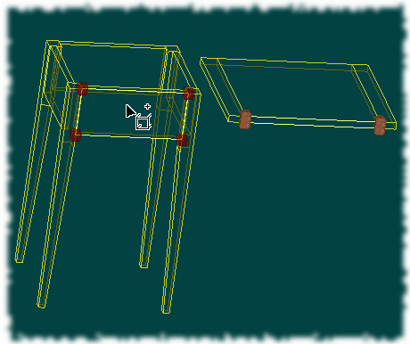
The front and rear skirts of the base are 13” wide, so the width of the base is 2 * 1.5” + 13” = 16”. Again, the skirts are set back from the leg faces by 1/8” so the distance between the outer faces of the side skirts is 16” - 2 * 1/8” = 15 ¾”. The top is 19 ½” wide (the 15 ½” field plus two 2” wide breadboard edges), so the the side edge of the top should be offset from the side skirt by (19 ½” - 15 ¾”) / 2 = 1 7/8”. Create another offset align constraint and select either edge of the top assembly and one of the side skirts to complete the top placement. The figure below shows one possible set of choices. Enter 1 7/8” in the offset dialog. (Note that while these calculations are simple, the whole point of the computer is to eliminate this kind of tedium. Hopefully, a future version of lignumCAD will be able to do all this for you.)
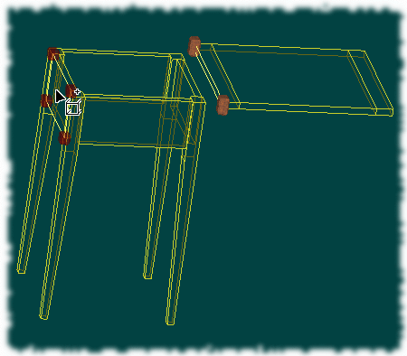
The final table assembly should look like the figure below.
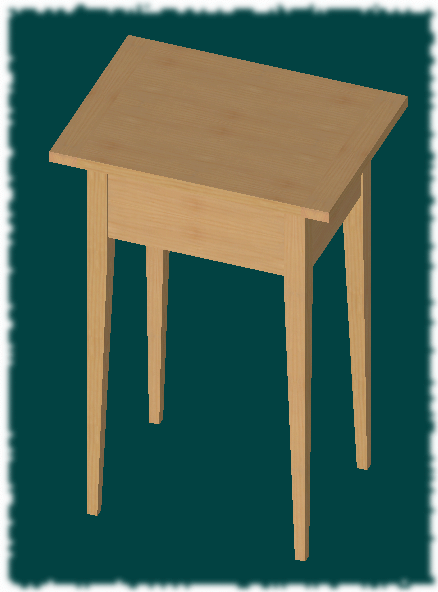
1It may be worth noting that the abstract nature of geometry is a relatively modern idea. The inventors of geometry believed that it was truly about concrete, real world objects; the word geometry itself means measurement of the Earth. It was only in the 19th century that mathematicians began to understand that geometry could be expressed as a system of arbitrary axioms and logical operations and that different systems of geometry could be derived based on different sets of starting axioms. This is a fascinating subject and I commend Euclidian and Non-Euclidean Geometries: Development and History, 3rd Ed., Marvin Jay Greenberg, 1993, W. H Freeman and Co, to you.